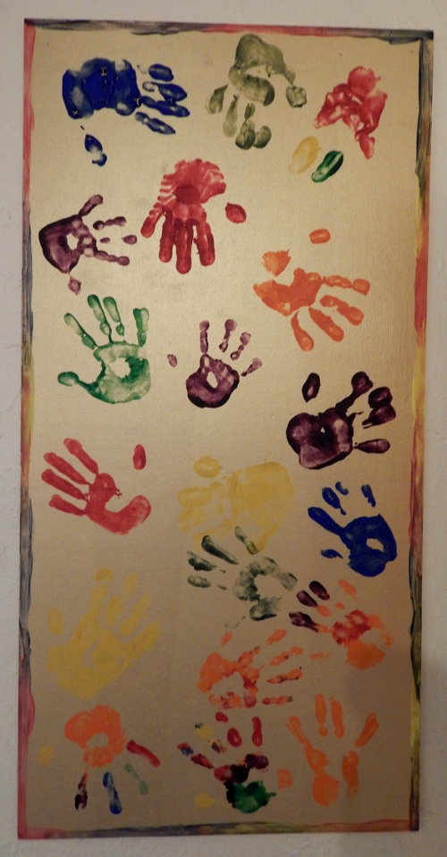

Support for Our Students in Their Lives in the U.S.
English Now! students have come from over 100 different countries, but they share the experience of transition to life in the United States. We find joy in supporting students through great language education. In addition, we also find that our small classes often enable us to get to know students well, and that as a result we can support them in other ways in their experience in the U.S.
Office Hours. Supporting our students starts with being available to answer questions. All of our instructors and staff are caring and helpful, and students may schedule time for longer discussions about life in the U.S., including bigger topics such as how to find opportunities to volunteer in the community, applications to graduate school, questions about a child’s school, and professional job searches. We look forward to talking to you!
Relationship with the Interchange Institute. We also partner with the Interchange Institute, a Boston-based non-profit organization dedicated to research and programming to support international residents of the U.S., to support our students’ transitions to the U.S. We provide students a copy of the Interchange Institute’s monthly newsletter about American culture, society, and politics, Newcomer’s Almanac, each month, and we make other great Interchange Institute publications – including Understanding American Schools: The Answers to Newcomers’ Most Frequently Asked Questions and Hello USA available in our library (and we would be glad to sell you a copy at a discount!). Interchange Institute Founder and Executive Director Anne Copeland has also visited English Now! twice for professional development workshops with our staff instructors, to equip us to serve our students with excellence.
Lunchtime Talks. We host Lunchtime Talks once a month on topics related to American society, culture, and politics, to help our students better understand their experiences in the U.S. and to enable them to engage well with Americans and American society.
Recommended Resources: Online. We are delighted to offer some recommendations regarding great online resources, to support your understanding of the U.S. and its role in the world:
- The American Experience: This is an amazing collection of over 250 documentary films about the U.S. Most may be viewed for free online at this site or on YouTube.
- Pew Research Center: Pew is a Washington, D.C. think tank that studies U.S. politics and policy; journalism and media; internet, science and technology; religion and public life; Hispanic trends; global attitudes and trends; and U.S. social and demographic trends. Their research is the single best way we know to understand the facts behind the headlines you will see in the U.S. media.
- Pew Global Attitudes Project: We are interested in the opinions and ideas of people around the world, and so is Pew. Pew’s Global Attitudes Project surveys citizens of 40+ countries and produces great research on global opinions about the world’s challenges and opportunities.
- We make a list of additional online and media resources available for our students and their families. Please ask any of us, and we would be glad to provide a copy.
Our Library.Finally, we cannot provide our students a comprehensive library of resources about the U.S. (or about any topic), but we do offer to loan students and their family members some handpicked books that will help them understand their American experience. These books also offer a good opportunity to practice reading in English! Please select from amongst the following:
- Resources about living in the U.S.:As mentioned above, we have copies on hand of two International Institute publications, Hello USA: Everyday Living for International Residents and Visitors and Understanding American Schools: The Answers to Newcomers’ Most Frequently Asked Questions. We strongly recommend the latter book for any international family with children in American schools.
- Books about raising children outside their home countries: we recommend three titles, Parenting Without Borders: Surprising Lessons Parents Around the World Can Teach Us, Third Culture Kids: Growing Up Among Worlds, and How Eskimos Keep Their Babies Warm: And Other Adventures in Parenting (from Argentina to Tanzania and everywhere in between).
- Easy reading historical fiction: if you read slowly but want to explore the U.S. through some easy reading but historically accurate fiction, we are delighted to recommend English Now! instructor Peggy Blair’s The Roaring 20s: The First Cross-Country Air Race for Women, House of Spies: Danger in Civil War Washington, Brothers at War, and Civil War Time Travel Adventure: The Sand Castle. All are available on Amazon or at the school! Also, we highly recommend the American Girl series of 89 books of historical fiction, all highly readable and well done stories that take readers into American history.
- How to think about culture:The Geography of Thought: How Asians and Westerners Think Differently, and Why is insightful and surprising.
- Great speeches:Lend Me Your Ears: Great Speeches in History and RFK: Collected Speeches are great ways to explore American ideas through speeches.
- Some of our favorite commentators: we have a collection of books by three of our favorite commentators about the U.S., David Brooks, Studs Terkel, and Samuel Huntington.
- A reminder of the context of the world in which we live: we highly recommend the book The Material World: A Global Family Portrait.
- An introduction to the natural beauty of the U.S.: read The National Parks: America’s Best Idea, watch the DVD series, or – better yet – visit one or more of our National Parks during your time in the U.S.!
- For survey research about Americans and how the U.S. is changing: the best book about some of the big changes occurring in the U.S. – related to immigration, aging, technology, and generational change – is The Next America: Boomers, Millenials, and the Looming Generational Showdown. This was developed by Pew Research Center; also see its companion website.
- Understanding what Americans believe and how we behave: finally, we have selected some of the best of American fiction and non-fiction, to help you understand what Americans believe and how we live. Choose from American Grace: How Religion Divides and Unites Us, Bowling Alone: The Collapse and Revival of American Community, Habits of the Heart: Individualism and Commitment in American Life, One Nation, After All: What Middle-Class Americans Really Think About God, Country, Family, Racism, Welfare, Immigration, Homosexuality, Work, The Right, The Left and Each Other, American Exceptionalism, The Myth of American Exceptionalism, the classic on the American Civil Rights Movement Parting the Waters: America During the King Years 1954-1963, and some selected fiction from Wendell Barry. And we are glad to loan you the classic Democracy in America, written by Français visitor to America Alexis de Tocqueville in the 1830s and still read in virtually every college-level American history course – and we hope that our students might be inspired to such insight about the U.S. during their time with us and beyond!
We are so happy to help our students and their families thrive in their time in the United States. Please let us know if you have any questions about any of the resources mentioned above. We also invite you to learn more about our classes; learn how to enroll; follow us on Facebook, or contact us.